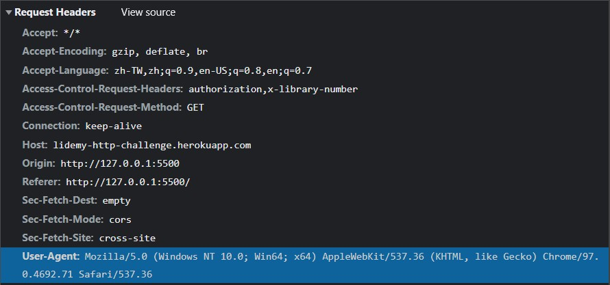

很重要的觀念哦！
前言
這篇文章主要會拿 Lidemy HTTP Challenge 這個小遊戲來做說明，所以建議玩過之後再來看，不然可能會看不懂。
另外我也寫了一篇攻略文：HTTP Challenge 攻略與心得 ，有興趣可以參考看看。
關於 CROS
CORS 的全名為「Cross-Origin Resource Sharing（跨來源資源共用）」，是一個「瀏覽器」的規範，目的是要讓我們可以「到不同來源的地方」去拿資料。
所以在解釋 CROS 之前，你要先了解為什麼需要 CORS？沒有 CORS 會有什麼問題？
沒有 CORS 會有什麼問題？
故事一樣要從瀏覽器說起，首先有一個叫做「同源政策（Same-origin policy）」的規範，內容是如果「請求資料方」跟「提供資料方」兩者不同源，瀏覽器就會把 response 給擋下來，至於什麼是「不同源」等一下會在解釋。
首先大部分的人在玩 Lidemy HTTP Challenge 的時候是透過 curl 或是在 Node.js 裡搭配 request 來玩的，所以不會碰到這個問題。
但是如果你改用「瀏覽器」的話就不一樣了，拿第三關來舉例：
1 | /* |
這時候打開 console 會看到：
備註：這裡我有開 liver-server，所以網址才會是 http://127.0.0.1:5500
這個就叫做「不同源」，因為「域名」不一樣：
- 請求資料者（我）
http://127.0.0.1:5500的域名是localhost（這個 ip 就是對應到 localhost） - 資料提供者（Lidemy）的域名是
lidemy-http-challenge.herokuapp.com
（嚴謹一點來說的話 http 跟 https 也是不同源，不同的 port 也是不同源，只是最常見的是域名）
這兩個是不一樣的，所以雖然 request 被送出去了，但回傳結果被瀏覽器給擋下了。
再特別強調一次，request 還是會送出去，只是結果會被瀏覽器擋下來。
切換到 Network 的欄位，可以看到以下資訊：
Status Code 是 200，代表處理成功。也就是說你其實是有新增書本到 server 端，只是回傳結果被瀏覽器擋下來了而已。
備註：其實像 POST 這種會去改 server 端資料的 request 通常會用「Preflight Request」比較嚴謹（詳細可以參考 輕鬆理解 Ajax 與跨來源 request ），不然如果哪天我隨便發一個 DELETE 到 server 就可以直接把東西給刪除掉，也太不安全了，對吧？
從這裡可以看到雙方的來源，Host 是 Lidemy 的位置，Origin 是我的位置。
所以只要這種 Host 跟 Origin 是來自不同地方的 request ，瀏覽器都會把 response 給擋下來。
為什麼需要 CORS？
所以在 同源政策（Same-origin policy） 的規範下，根本不可能做到「去別的地方拿資料」這件事。
CORS 就是用來解決這個問題的。
還記得前面剛剛說過 CORS 的用意是讓我們「到不同來源的地方去拿資料」這件事嗎？現在你只要在 server 端加上一個 header：access-control-allow-origin，就可以做到這件事情。
access-control-allow-origin 是 CORS 這個規範下的一個 header，用來讓 sever 決定「誰可以存取這個資源」的意思。
如果我只想讓「http://example.com:8080」來存取資源，server 就設定：
access-control-allow-origin: http://example.com:8080
如果要讓「任何人」都能存取，那就用萬用字元「*」來設定：
access-control-allow-origin: *
以 Twitch 的 API 來舉例：
可以跟 Lidemy 對照一下：
兩個只差在有沒有 access-control-allow-origin 而已，Lidemy 沒有加上這個 header，所以我們發 request 的時候 response 會被瀏覽器給擋住，但是 Twitch 有，所以發 request 給 Twitch 不會被瀏覽器給擋下 response：
雖然已經說過很多次了，但還是要再強調一次。你一定要搞清楚瀏覽器擋下的是 sever 回傳的 response，不是你發出去的 request，這個差異很重要。
最後統整幾個重點：
- 因為同源政策的關係，所以沒辦法到別的地方拿資料
- 同源政策的機制是瀏覽器會把 response 擋下來，但實際上 request 還是有發出去
- CORS 是用來解決同源政策的限制，實現「跨來源」交換資料這件事，實現的方法就是在 server 端加上
access-control-allow-origin: *
大致上就是這樣，不過還有另外一種實現「跨來源」交換資料的老方法，叫做「JSONP」，簡單來說就是藉由 <script src="xxx"> 來發出 request ，詳細可以參考我以前寫的文章：實作 JSONP。
關於瀏覽器的限制
瀏覽器除了有同源政策的規範之外，還有一個限制是不可以竄改 User-Agent 的內容。
在遊戲的第九關，不是會要你去把 User-Agent 改成 IE6 的內容嗎？如果用瀏覽器來做的話一樣會發現行不通：
1 | /* |
結果如下：

除了不同源的問題之外，現在還蹦出了一個 Refused to set unsafe header "user-agent" 錯誤，簡單來說就是「不要亂改 user-agent，這樣會初四啦」。
這時候你檢查一下 request header，就能看到真的沒有被改掉：

但如果是在「不是瀏覽器」的情況下（例如 Node.js），就不會有這個限制：
1 | /* |
結果：
1 | 200 |
所以看完這篇文章後一定要搞清楚 是不是在瀏覽器執行的？ 會影響最後的結果。
如果是，那你就要注意瀏覽器會有哪些限制，像剛剛介紹的「同源策略」和「不可以竄改 User-Agent」等等。
不是的話呢？那恭喜你，以上提到的限制全部都不會發生。
文末
其實在玩遊戲的時候沒有考慮到那麼多事情，是因為看了 幕後花絮：Lidemy HTTP Challenge 的設計以及彩蛋 後才發現這些藏在裡頭的眉眉角角。
所以如果你原本跟我一樣沒有發現這些細節的話，希望這篇文章能夠為你帶來幫助。